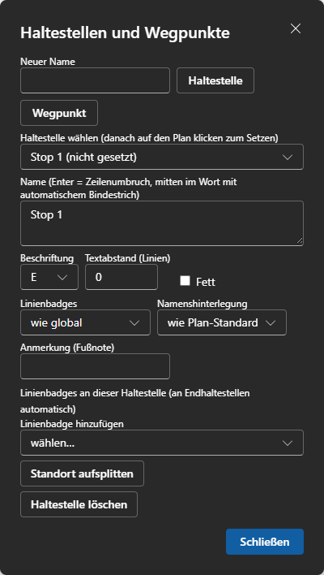
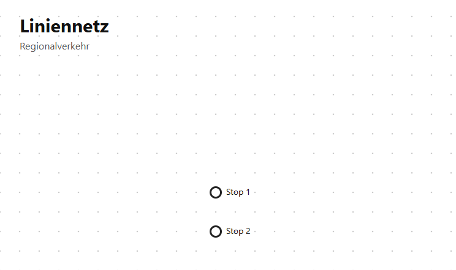
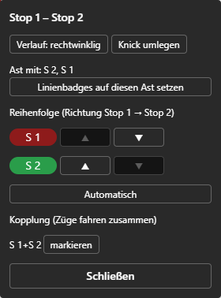

Dein erster Liniennetzplan in 10 Minuten
So entsteht ein Plan im Liniennetz-Editor, vom leeren Projekt bis zum Export. Du beschreibst das Netz und setzt die Haltestellen, den Rest berechnet das Programm.
Projekt anlegen
Öffne den Editor und wähle Neues Projekt. Im ersten Schritt des Assistenten legst du Titel, Untertitel und Seitenformat fest (A4, A3 oder frei, Quer- oder Hochformat) sowie die Anzahl der Spalten. Bei A4 und A3 ergeben sich die Zeilen aus den Spalten.
Du willst erst einmal sehen, wie ein fertiger Plan aufgebaut ist? Auf dem Reiter Start lädt Beispielnetz ein kleines Demo-Netz.

Entwurf festlegen
Im zweiten Schritt wählst du die Größe des Haltestellensymbols, die Stärke der beiden Linienkategorien („Häufig bedient“ und „Selten bedient“) und die Schriftart. Alles lässt sich später unter dem Reiter Entwurf ändern. Mit Fertig beginnt die Arbeit am Plan.

Haltestellen anlegen
Wechsle auf den Reiter Netz und öffne Haltestellen…. Gib einen Namen ein und klicke auf Haltestelle. Das wiederholst du für alle Halte. Wegpunkt legt eine unsichtbare Hilfsstelle an, mit der du Linien um Ecken führst, ohne dort zu halten.
Bei großen Netzen sparst du Zeit mit dem CSV-Import (Reiter Netz › CSV… › Importieren). Erwartet wird die Kopfzeile
Name;Spalte;Zeile.
Haltestellen auf dem Raster platzieren
Wähle im Feld Zum Platzieren wählen eine Haltestelle (noch nicht gesetzte sind mit „nicht gesetzt“ markiert) und klicke auf die gewünschte Stelle im Plan. Die Haltestelle rastet auf dem Raster ein. Gesetzte Haltestellen verschiebst du per Ziehen.
Der Abstand zwischen den Haltestellen auf dem Raster ist die wichtigste Stellschraube: Er bestimmt, wie der Editor Strecken verlegt.

Linie anlegen und Halte zuordnen
Öffne Linien bearbeiten… und klicke auf Linie hinzufügen. Vergib Namen und Farbe und wähle das Icon (Pille oder Rechteck). Hänge die Halte über Halt anhängen… in Fahrtreihenfolge an. Per Ziehen sortierst du sie um. Sobald zwei aufeinanderfolgende Halte gesetzt sind, zeichnet der Editor die Verbindung, mit 0°-, 45°- und 90°-Strecken und runden Knicken.

Äste, Ringlinien und Halteart
Mit Ast / Teilstück hinzufügen ergänzt du Abzweige oder Abschnitte mit anderer Bedienung. Jeder Abschnitt hat seine eigene Kategorie, zum Beispiel „Selten bedient“ als gestrichelte Linie. Das Häkchen Ringlinie verbindet letzten und ersten Halt. An jedem Halt schaltest du zwischen Halt, zeitweiser Bedienung und Durchfahrt um (● ◐ ○) und setzt bei Bedarf einen Richtungshalt (→ ←).
Verlauf feinjustieren
Verlaufen mehrere Linien auf derselben Strecke, bündelt der Editor sie automatisch nebeneinander. Ein Klick auf eine Verbindung öffnet ein kleines Menü: Verlauf schräg oder rechtwinklig, Knick umlegen, Reihenfolge der Linien im Bündel ändern, Linienbadges auf den Abschnitt setzen.

Beschriften und prüfen
Bei jeder Haltestelle legst du fest, auf welcher der acht Seiten der Name steht (N, NE, E …). Mit Labels automatisch unter Netz übernimmt der Editor das für alle Halte und vermeidet dabei Überlappungen. Lange Namen brichst du mit der Eingabetaste um. Zum Schluss zeigt Prüfung… Haltestellen ohne Linie, nicht gesetzte Halte, doppelte Positionen und überlappende Beschriftungen.
Titel, Legende und Linienübersicht
Unter dem Reiter Plan öffnest du Plan-Einstellungen…. Dort blendest du Titel, Legende und Linienübersicht ein und positionierst sie in Rasterkästchen. Die Legende entsteht automatisch aus deinen Kategorien und Haltestellensymbolen. Flüsse, Grenzen und Flächen zeichnest du auf dem Reiter Zeichnen.

Speichern und exportieren
Auf dem Reiter Start sicherst du dein Projekt mit Speichern als JSON-Datei. In Chrome, Edge und Opera schreibt der Editor danach automatisch in dieselbe Datei. Exportiere den fertigen Plan als SVG (weiterbearbeitbar), PNG (Auflösung unter den Plan-Einstellungen) oder PDF. Beim PDF öffnet sich der Druckdialog des Browsers, dort wählst du „Als PDF speichern“ und erlaubst vorher Pop-ups. Der Dateiname entspricht der Überschrift deines Plans.

Wie geht es weiter?
Du hast jetzt einen kompletten Plan. Als Nächstes lohnen sich Textvorlagen und Entwürfe unter dem Reiter Entwurf, aufgesplittete Haltestellen und Linienbadges an Endhaltestellen. Tipps für ein gutes Ergebnis findest du im Ratgeber, Antworten auf häufige Fragen in den FAQ. Kommst du von Microsoft Publisher? Dann hilft dir die Seite Publisher-Alternative beim Umstieg.